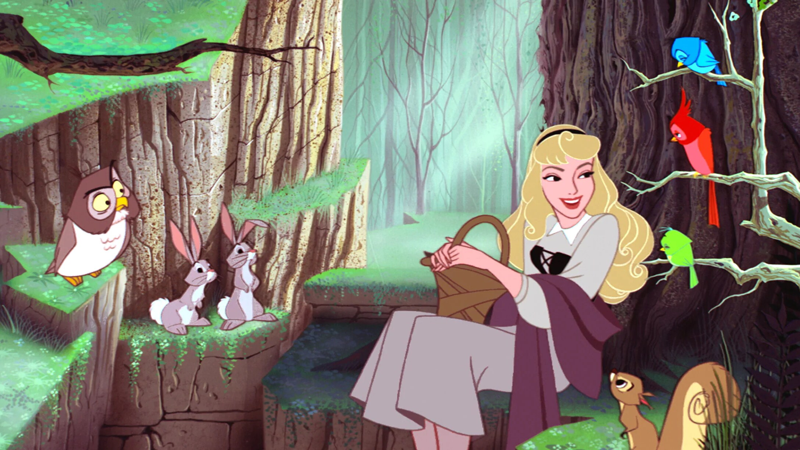
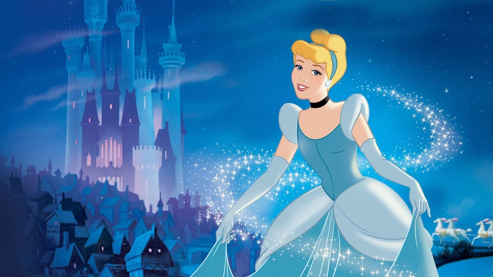
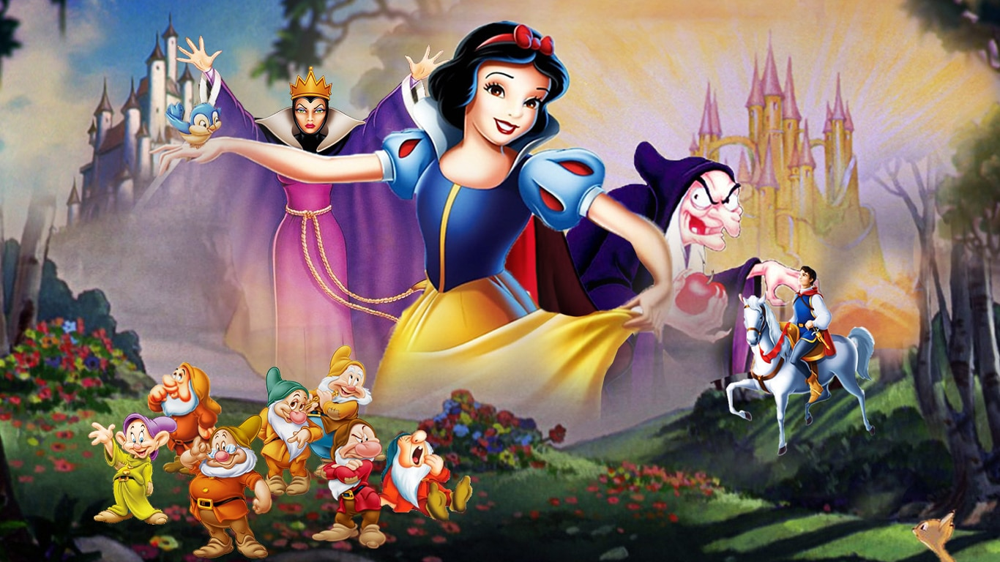

AURORA

VOLTAR
Aurora é baseada em um conto de Charles Perrault e dos Irmãos Grimm. Ela é amaldiçoada por Malévola, uma fada sombria, a cair em um sono profundo ao espetar o dedo em uma roca de fiar. Aurora é criada por três fadas madrinhas e cresce sem saber de seu passado real. Ela é despertada pelo beijo do príncipe Filipe, que enfrenta Malévola para salvá-la.
CINDERELA

VOLTAR
Baseada no conto de Charles Perrault, Cinderela é uma jovem que vive como serva de sua madrasta e de suas irmãs adotivas. Apesar das dificuldades, ela mantém a esperança e bondade. Com a ajuda de sua fada madrinha, Cinderela vai ao baile do príncipe, onde ele se apaixona por ela. Depois de perder um dos sapatos de cristal, é reconhecida pelo príncipe e se torna princesa. Sua história simboliza a importância da perseverança e da bondade.
BRANCA DE NEVE

VOLTAR
Branca de Neve é a primeira princesa da Disney e a protagonista do primeiro longa-metragem animado do estúdio. Inspirada no conto dos Irmãos Grimm, Branca de Neve é uma princesa bondosa e pura, conhecida por sua beleza e coração gentil. Ela foge de sua madrasta, que, enciumada, tenta envenená-la com uma maçã. Branca de Neve é acolhida pelos sete anões e é despertada por um beijo do príncipe encantado.
RAPUNZEL
 VOLTAR
VOLTAR
Rapunzel é uma princesa que vive trancada em uma torre, com um cabelo mágico extremamente longo. Quando o ladrão Flynn Rider invade sua torre, ela vê uma oportunidade para escapar e explorar o mundo. Rapunzel é cheia de curiosidade, coragem e determinação, e sua história é sobre liberdade e autoconhecimento.
JASMINE
VOLTAR
Jasmine é a princesa de Agrabah e deseja liberdade para decidir seu próprio futuro. Quando conhece Aladdin, um jovem de bom coração, ela experimenta a vida fora do palácio e desafia as tradições de sua época. Jasmine é uma das primeiras princesas a lutar por sua independência e representa uma visão moderna de empoderamento feminino.
ARIEL
VOLTAR
Ariel é a primeira princesa da Disney que vive embaixo d'água. Inspirada no conto de Hans Christian Andersen, Ariel é uma sereia que sonha em viver entre os humanos. Ela troca sua voz por pernas com a bruxa do mar, Úrsula, para se aproximar do príncipe Eric. Ariel é curiosa, aventureira e representa a busca por liberdade e autodescoberta.